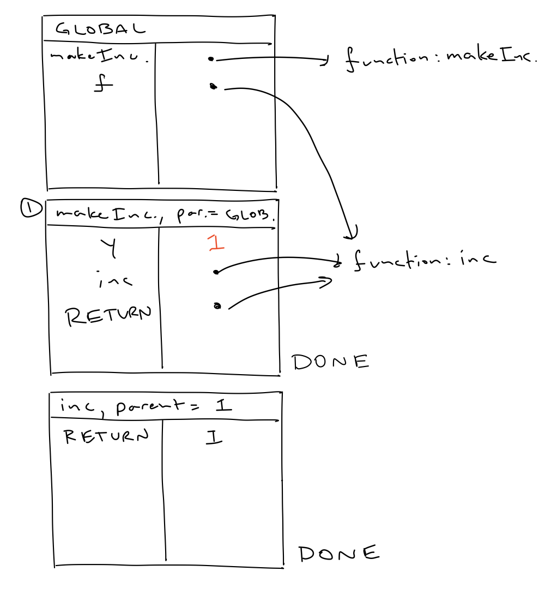

Up to now, we have said that the lines of a Swift program change the state of the program, and we have had to use our intuition a bit to reason about what exactly that state is. Fortunately, things like if-statements and function declarations have (somewhat) clear interpretations as concepts in natural language and general logical reasoning, so we have been able to get by up to this point. But as we are starting to see more complicated examples, and things like captured values or escaping functions, we are going to want a more robust model of execution in our minds so that we know what behavior to expect from the programs that we write.
For URM programs, the model of execution consisted of a URM and a way of maintaining the next instruction to be executed in the program. Part of the reason that we started with URMs is because it is possible to see both the language and model in one sitting. Swift is, of course, more complicated, we instead maintain an environment.
We will use environment diagrams to visualize environments for the execution of a Swift program. These were first successfully used as pedagogical tools to describe the behavior of imperative programs by Harold Abelson and Gerald J. Sussman (with Julie Sussman) in Structure and Interpretation of Computer Programs, an introductory programming textbook that, despite being a couple decades olds at this point, is still quite useful and entertaining. They used a version of the language Scheme. Incidentally, my first programming course borrowed much of its material from SICP and adapted environment diagrams for the language Python. I am continuing this tradition, now for Swift.
Environment diagrams have a history at my alma mater of being disliked (or hated) by students. This seems to me primarily because some people already have intuitions about the way programs are executed, and feel like they don't need a complicated formal description. I personally like environment diagrams quite a bit, in part because of my interest in logic. They allow us to give a complete logical description of how a program is executed, and they give a glimpse of how you might write an interpreter or compiler for a more complicated language like Swift.
In what follows, we will describe environment diagrams formally for a subset of features of Swift. It is not too difficult to extend the notion to more complicated features, but it is enough for us now to look at the basics. We also make a couple simplifying assumptions:
An environment is made up of a list of frames, each of which consists of a collection of name-value pairs called bindings. The names may be constant names, variable names, or function names, and are bound to values throughout the execution of a program. A frame is visualized as a box with a title and a vertical separating line, where names appear to the left of the line and values appear to the right.
When starting to execute a program, there is a single frame in the environment, the global frame, which will, over the execution of the program, contain all variables and functions at the top-level of the program, those not defined inside other function declarations.
New frames will be created by calls to defined functions and control-flow statements, and will be given different titles according to each case. These represent the local environments in which work is performed, isolating variables defined inside a function or control-flow statement from outside the body of the function or statement. They will be placed below the global frame in a list from top to bottom as they are created. Each new frame also has a parent frame.
The parent frame of a function call is the frame in which the function is declared. The parent frame of a control-flow statement is the frame in which the statement is executed.
Frames are numbered according to their position in the list. The global frame has number 0. Parents will either be referred by number, or by name if it is clear from context (e.g., if the parent is the global frame).
To give a sense of how this will look, the following is the state of the environment diagram after executing the following program.
func f(x: Int) -> Int {
return x + 2
}
f(x: 3)The name f appears in the global frame and a new frame was created when the function was called.
In the notes on Program Anatomy, we saw that a Swift program is an ordered collection of statements. In the environment, every frame corresponds to a collections of statements that will be executed in order from top to bottom. This might seem quite different from the model of execution for URM programs, where the next statement depended on the execution of the current statement (as for jump instructions). However, because of compound statements, individual statements can cause the creation of new frames, which will run their own collection of statements. This is where we get the sense of looping and jumping around in a Swift program even though we are reading statements in a fixed order.
Once a function or control statement is finished executing, there are no more statements to execute, the new frame is labeled with DONE, as in the previous example. In the execution of a program, because of nested statements, there may be many live frames at any one time. Therefore, we also keep track of a current frame. Fortunately, we don't have to actually do anything special to maintain the current frame.
The current frame is the frame which has the largest number and is not labeled with DONE.
Evaluating expressions is done with respect to the state of an environment diagram. We will need to evaluate expressions to execute certain statements. We can update the rules from the notes on Program Anatomy to reflect this.
The value of a literal is the literal itself (the expression 2 evaluates to 2 no matter the environment diagram)
The value of a name (a variable, constant, or function name) is determined by lookup.
Lookup Procedure. If the name is in the current frame, then the value is the one corresponding to that name. If not, then the same check is done in the parent frame. If it is not in the parent frame, then this is repeated in the parent's parent frame, and so on. If this is done all the way to the global frame and the name does not appear, then the expression has no value and the program fails to execute.
Given an expression of the form expF(name1: exp1,..., namek: expK). Apply the this evaluation procedure to expF to get the value of valueF of expF. If valueF is a declared function, then create a new frame with the name of valueF (we are ignoring closures for now, so valueF must have a name) as its title. For each input, from left to right, evaluate the expression inputJ to get its value valueJ and bind it to the name nameJ. Once this is done, execute the statements in the body of the function from top to bottom.
Note the circularity here. We need to know how to execute statements to evaluate expressions, but we need to know how to evaluate expressions to execute some statements! Also note that we have been a bit ambiguous about built in functions and operators. For these, we do not create new frames. We will treat their application as being understood to have the behavior we expect them to have. This is a bit of a punt, but it makes sense because we don't actually have access to the code that make ups built-in functions, and so their application should not be expressed in the environment.
We now describe how to execute statements and, in particular, how the environment is affected by the execution of certain statements. They will be presented somewhat tersely. The next section contains an extended example.
Given a statement which is just an (non-function) expression, the expression is simply evaluated in the environment.
func <funcName>(<inputs>) {
<body>
}The name <funcName> is bound to an arrow point out of the location where the value should be to a function object, represented in the diagram simply as "function: <funcName>". We can think of this as a copy (or, more formally, a closure) of the statements in <body>.
var <name> = <expression>or
let <name> = <expression>If the expression <expression> not a variable, then it is evaluated and its value bound to the name <name> in the current frame. If <expression> is a variable someVariable, then there are two possible behaviors. If the value of someVariable is an arrow, like in the case of functions, the <name> is bound to an arrow pointing to the same object. Otherwise, it is value is bound directly to <name> in the current frame. This is the difference between a value type and a reference type.
A value type is copied when it is the object of an assignment. The reference (the arrow) of a reference type is copied when it is the object of an assignment.
Take, for example, the program
func f() -> Int {
return 0
}
var g = f
var y = [1, 2, 3, 4]
var z = y
z.append(5)with the following environment diagram at the end of execution.
<name> = <expression>The name <name> is found in the environment using the lookup procedure from above. If the name is found, then then expression is evaluated and the value is bound to the name in the environment, replacing the old value. The same fact about value types and reference types apply here as well.
while Statementswhile <condition> {
<body>
}The expression <condition> is evaluated in the environment diagram. If its value is true, then a new frame with the title WHILE is created which executes the statements in <body> from top to bottom. Once this frame as completed executing (once it is labeled DONE), then the expression <condition> is evaluated again. If its value is true again, then a new frame is created executes <body>. This is repeated as long as the value of <condition> evaluates to true.
The semantics for for loops would be similar, but we won't consider them for now.
if Statementsif <condition> {
<body>
}The expression <condition> is evaluated in the environment diagram. If its value is true, then a new frame titled IF is created which executes the statements in <body> from top to bottom. It is not too hard to imagine how to adapt this for else if and else as well.
return Statementsreturn <expression>the expression <expression> is first evaluated to some value someValue. The current frame is then labeled DONE and all subsequent statements of the frame are ignored. If the current frame corresponds to a function call, then and a special name RETURN is bound to someValue in the current frame. If the current frame is does not correspond to a function call, then the parent frame is checked. The parent frame is labeled DONE and RETURN is bound to someValue, with subsequent statements ignored. This is repeated for the parent's parent, and so on, until a function calling frame is reached.
One special case here is for functions without return values. Once a frame for a function call with no return value is completed, we always bind RETURN to () in the frame.
We will go over the steps of maintaining an environment diagram for the following program. The statements will be labeled by the number in each frame.
var x = 2 | 0 <---
|
func f(y: Int) -> Int { | 1
return x + 2 |
} |
|
func g(x: Int) -> Int { | 2
if x == 3 { |
let z = 3 |
return z + 4 |
} |
return x + 10 |
} |
|
func h() { | 3
print(f(y: x) + g(x: 3)) |
} |
|
let z = h() | 4Statement 0 is a variable declaration. We first have to evaluate the object of the declaration. This is just the literal 2, which has value 2. We then bind the name x to the value 2 in the global frame.
Statement 1 is a function declaration. We bind the name f to a reference (arrow) to a function object.
Statements 2 and 3 are also function declarations and bind name to references in the global frame.
var x = 2 | 0
|
func f(y: Int) -> Int { | 1
return x + 2 |
} |
|
func g(x: Int) -> Int { | 2
if x == 3 { |
let z = 3 |
return z + 4 |
} |
return x + 10 |
} |
|
func h() { | 3
print(f(y: x) + g(x: 3)) |
} |
|
let z = h() | 4 <---h which yields the value h by lookup in the global frame. Since this is a defined function, we create a new frame. And since h has no inputs we don't initialize any bindings in the frame.var x = 2 | 0 |
| |
func f(y: Int) -> Int { | 1 |
return x + 2 | |
} | |
| 2 |
func g(x: Int) -> Int { | |
if x == 3 { | 3 |
let z = 3 | |
return z + 4 | |
} | |
return x + 10 | |
} | |
| |
func h() { | 4 |
print(f(y: x) + g(x: x)) | | 0 <---
} | |
| |
let z = h() | 5 <--- |The next statement to execute is the first statement for the new frame, Statement 0 in h. It is a function call, so we first evalute print, which we find is a built-in function. We don't make new frames for built-in functions, so next we evaluate the input to print. Again, we won't make a new frame for the call to the operator +, so next we evaluate its inputs, first f(y: x), then g(x: 3).
To evaluate f(y: x), we first evaluate f, which yields the function f in the global frame by the lookup procedure. Note that f is not in the current frame, so this required checking the parent frame. Since f is a defined function, we create a new frame. The parent of this frame is the global frame, where f is declared, not the current frame, where f is called. We then evaluate the input x, and bind its value 2 to the name y in the new frame.
var x = 2 | 0 | |
| | |
func f(y: Int) -> Int { | 1 | |
return x + 2 | | | 0 <---
} | | |
| | |
func g(x: Int) -> Int { | 2 | |
if x == 3 { | | |
let z = 3 | | |
return z + 4 | | |
} | | |
return x + 10 | | |
} | | |
| | |
func h() { | 3 | |
print(f(y: x) + g(x: 3)) | | 0 <--- |
} | | |
| | |
let z = h() | 4 <--- | |Statement 0 in f is a return statement. We first evaluate the expression x + 2, for which x evaluates to 2 by lookup in the parent frame, all together yielding the value 4. We create the special RETURN binding. Since there are no more lines for this frame to execute, we label the frame with DONE.
Evaluating g(x: 3) is roughly the same to begin. Since g is a defined function, we create a new frame and bind the name x to the value 3.
var x = 2 | 0 | |
| | |
func f(y: Int) -> Int { | 1 | |
return x + 2 | | |
} | | |
| | |
func g(x: Int) -> Int { | 2 | |
if x == 3 { | | | 0 <---
let z = 3 | | |
return z + 4 | | |
} | | |
return x + 10 | | | 1
} | | |
| | |
func h() { | 3 | |
print(f(y: x) + g(x: 3)) | | 0 <--- |
} | | |
| | |
let z = h() | 4 <--- | |if statement. First we have to evaluate the condition. We do not create a new frame for the built-in operator (==). We evaluate its first argument x by lookup in the current frame. This is an example variable shadowing in which a binding in the current frame hide bindings with the same name in its ancestor frames. We then evalute the second argument 3 to the value 3, which means the entire condition evalutes to true. So we have to create another frame.var x = 2 | 0 | | |
| | | |
func f(y: Int) -> Int { | 1 | | |
return x + 2 | | | |
} | | | |
| | | |
func g(x: Int) -> Int { | 2 | | |
if x == 3 { | | | 0 <--- |
let z = 3 | | | | 0 <---
return z + 4 | | | | 1
} | | | |
return x + 10 | | | 1 |
} | | | |
| | | |
func h() { | 3 | | |
print(f(y: x) + g(x: 3)) | | 0 <--- | |
} | | | |
| | | |
let z = h() | 4 <--- | | |if statement is a simple constant declaration which creates a binding in the current frame. The next and last statement in the frame is a return statement. Evaluating its expression yields the value 7. We then label the frame DONE. Since it is not a frame for a function call, we do not include the RETURN binding. Its parent frame is the frame for the function call of g, so we include the RETURN binding here and label the frame DONE, ignoring all later statements.+ in Statement 0 for h. The print statement does not have any output, so this expression evaluates to (). Since there are no more lines to execute, we include the RETURN binding to () and label the frame DONE.z is the bound to the value () in the global frame. Since this is the last line in the global frame, we label the frame DONE.In practice, if you have to draw an environment diagram you don't need this much detail. You can skip simple steps in the evaluation process, as long as you create all the necessary frames.
With environment diagrams, we can now see the mechanics of captured variables and escaping functions as an effect of the semantics. The important fact to note is that the lookup procedure still looks at frames labeled by DONE when trying to find the value of a name. Consider the following program
func makeIncrementer() -> () -> Int {
var y = 0
func inc() -> Int {
y += 1
return y
}
return inc
}
var f = makeIncrementer()
f()
f = makeIncrementer()
f()The first statement creates a simple function binding. For the second binding, we first have to create a new frame for the call to makeIncrementer(). In the new frame, we have two bindings and a return value. Once this frame has finished executing, f points to the same function object as inc.
Calling f in the next statement creates a new frame (note it is still named inc, the actual defined function name), but the parent of this frame is not the global frame because the function object for f was not defined there, but in the frame for makeIncrementer. Now when we execute the statements in inc, the lookup for y will check the frame for makeIncrementer and update the value of y there.

For reassignment of f and the second call to makeIncrementer, we make another frame for makeIncrementer, and another function object for inc. So the second call to f will update the new instance of y in this second makeIncrementer frame, ending in this final diagram.